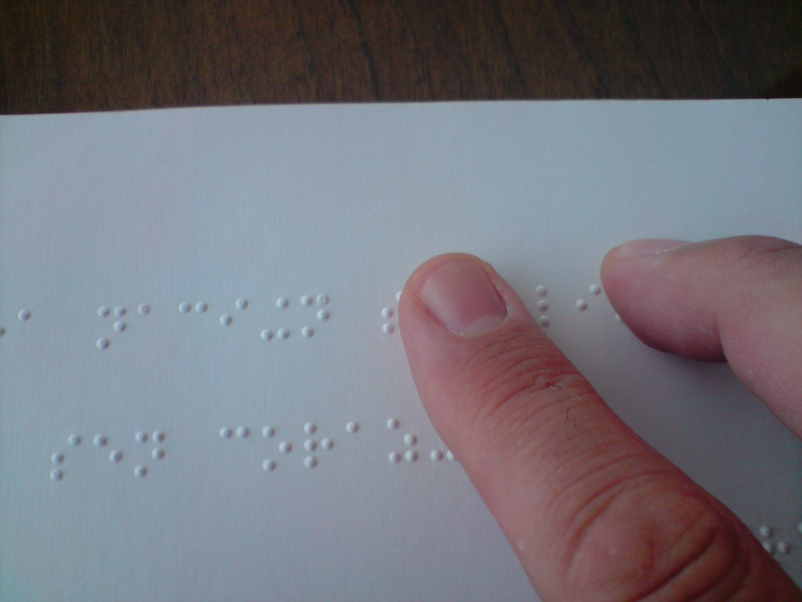

La accesibilidad de las imágenes en la web
Mario Zapata Palazón
Marzo 2024
Beneficios
Las imágenes accesibles son beneficiosas en muchas situaciones,
por ejemplo:
Personas que utilizan lectores de
pantalla:
El texto alternativo puede leerse en voz alta o en
Braille.
Beneficios
- Personas que utilizan software de entrada de
voz:
- Los usuarios pueden enfocar un botón o una imagen vinculada con un
solo comando de voz.

Beneficios
Personas que navegan por sitios web con
voz:
La alternativa de texto puede leerse en voz alta
Usuarios de web móvil:
Las imágenes pueden desactivarse, especialmente en itinerancia de
datos.
Optimización de motores de búsqueda:
Los motores de búsqueda indexan las imágenes.
Principios básicos
- Toda imagen debe tener un atributo alt.
- El texto alternativo (alt-text) puede
proporcionarse en el “atributo alt” o en el contexto
circundante de la imagen.
- El texto alternativo apropiado depende en gran medida del contexto
de la imagen.
Principios básicos
- Las imágenes decorativas siguen necesitando un atributo alt, pero
debe ser null alt=““.
- El texto alternativo debe ser sucinto y no contener las frases
“imágenes de…” o “gráfico de…”.
Tipos de imágenes
El tipo de información que proporcione en el texto alternativo se
basa en la finalidad de la imagen. A continuación, veremos los tipos de
imágenes más frecuentes.
Tipos de imágenes
Imágenes informativas
- Imágenes que representan gráficamente conceptos e información,
normalmente cuadros, fotos e ilustraciones. El texto alternativo debe
ser al menos una breve descripción que transmita la información esencial
presentada por la imagen.
Tipos de imágenes
Imágenes decorativas
- Proporcione una alternativa de texto nulo (alt=““) cuando el único
propósito de una imagen sea añadir decoración visual a la página, en
lugar de transmitir información importante para la comprensión de la
página.
Tipos de imágenes
Imágenes funcionales
- La alternativa de texto de una imagen utilizada como enlace o como
botón debe describir la funcionalidad del enlace o del botón más que la
imagen visual. Ejemplos de este tipo de imágenes son un icono de
impresora para representar la función de impresión o un botón para
enviar un formulario.
Tipos de imágenes
Imágenes de texto
- A veces se presenta texto legible dentro de una imagen. Si la imagen
no es un logotipo, evite el texto en imágenes. Sin embargo, si se
utilizan imágenes de texto, la alternativa de texto debe contener las
mismas palabras que en la imagen.
Tipos de imágenes
Imágenes complejas: como gráficos y diagramas
- Para transmitir datos o información detallada, proporcione como
alternativa de texto un equivalente en texto completo de los datos o la
información proporcionados en la imagen.
Tipos de imágenes
Grupos de imágenes
- Si varias imágenes transmiten una misma información, la alternativa
de texto para una imagen debe transmitir la información de todo el
grupo.
Tipos de imágenes
Mapas de imágenes
- La alternativa de texto para una imagen que contiene múltiples áreas
sobre las que se puede hacer clic debe proporcionar un contexto general
para el conjunto de enlaces. Además, cada área sobre la que se pueda
hacer clic debe tener un texto alternativo que describa la finalidad o
el destino del enlace.